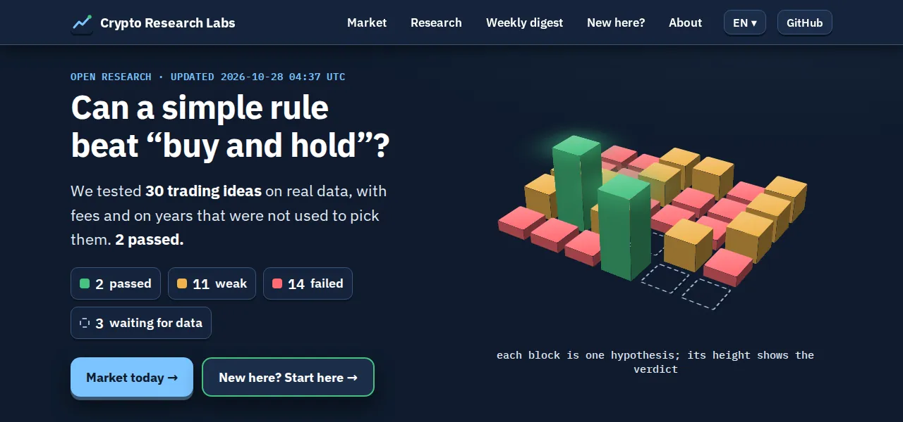

Crypto Research Labs
Một phòng thí nghiệm mở, nơi tôi kiểm tra các ý tưởng giao dịch tiền mã hóa và công bố mọi kết quả, kể cả thất bại.
Mọi chuyện bắt đầu từ con bot giao dịch của chính tôi. Khi chạy lại 7.649 tín hiệu của nó trên giá thật, hóa ra nó đoán hướng giá còn tệ hơn tung đồng xu. May mà nó chỉ giao dịch trên sàn thử nghiệm. Thay vì chỉnh nó cho đến khi backtest trông đẹp, tôi dựng một phòng thí nghiệm mà ở đó mẹo này không còn tác dụng: mỗi ý tưởng được viết ra và niêm phong bằng hash trước khi kiểm tra, phí giao dịch luôn được tính, và GitHub Actions định kỳ kiểm tra lại mọi thứ trên dữ liệu mới. Phần lớn ý tưởng không vượt qua, và những thất bại được ghi lại cẩn thận chẳng kém gì thành công.
Cách thực hiện mỗi phép kiểm tra được giải thích trong phần phương pháp, mọi kết quả nằm ở trang nghiên cứu, và còn có khóa học cho người mới bằng bảy ngôn ngữ.
